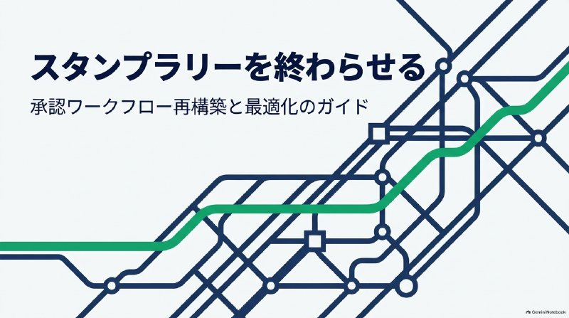
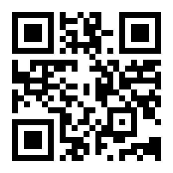

完璧な承認ワークフローの設計
社内の申請・承認の流れを見直すきっかけに、まずは動画をご覧ください。
約6分の動画です。再生ボタンを押すと音声が流れます。動画だけを開く（新しいタブ）こともできます。
お問い合わせは、Google アカウントでログインして送れるフォームで受け付けています。
チャンネル「62歳nuruboのAI4人シェアハウス」。AIたちとの暮らしと、猫ロボットやAIアシスタント端末づくりの記録です。動画は、このページでもそのまま見られます。
むずかしい言葉は使わずに、手順をひとつずつ。直せたら、次から自分でできるようにメモも残します。
ドライバーの入れ方、印刷できない、スキャンの設定など。
つながらない、遅い、新しいメールアドレスの設定など。
AIの使いはじめ、毎回の手作業を減らす小さな仕組みづくり。
ロボットや電子工作の話も大歓迎。作ったものも紹介していきます。
聞かれることが多いものから順に、手順をまとめています。タップすると開きます。
会社のパソコンの場合：「デバイスの追加」で見つかったプリンターをそのまま使うと、会社が指定しているドライバーやつなぎ方とは違うものが入ることがよくあります。自分で追加する前に、システム担当の方に「指定のドライバーと入れ方」を聞いておくと、あとのトラブルを防げます。
ドライバーは必ずメーカー公式サイトから。広告で出てくる「ドライバー一括更新」のようなソフトは入れないでください。
一度手差しで印刷したら、それが Windows 側で「いつもの設定」として固定されてしまう。そのあと A4 などに変えても、再起動などのタイミングでまた手差しに戻ってしまう。そんなトラブルです。
よくある原因は、プリンターをメーカーのドライバーではなく、Windows が用意した標準のドライバーで動かしていることです。給紙の設定を Windows 側が持っているので、アプリでそのつど変えても元に戻りやすくなります。また、2025年秋ごろから「一時的に変えた設定がそのまま標準になる（自動→手差しなど）」という声も出ています。
Windows 11 では、新しくプリンターを追加するときに Windows 標準の仕組み（Windows Ready Print）を優先する設定が、最初からオンになっています。標準ドライバーでも印刷はできますが、メーカー専用の機能や細かい用紙・給紙の設定が思いどおりにならないことがあります。
これがオンだと、最後に使ったプリンターが「いつものプリンター」に自動で切り替わります。Windows 側の設定で入った方に切り替わって、そちらの設定（手差しなど）で印刷されてしまうことがあります。オフにすれば、メーカーのドライバーの設定どおりに印刷されるようになります。
Windows はネットワーク上のプリンターを見つけると、WSD という仕組みで自動的に追加したがります。一方、メーカーのソフトや会社の設定では、プリンターに決めた IPアドレス を指定して入れることがよくあります。この2つが両方入っていると、同じプリンターが一覧に2つ並び、どちらで印刷されるかで設定が変わってしまいます。
IPアドレスでつなぐ場合は、ルーター側でプリンターのIPアドレスを固定しておくと、あとで「つながらない」が起きにくくなります。
参考（公式）：WSD の注意事項（富士フイルムビジネスイノベーション）
標準ドライバーのままだと、ここで決め直してもまた戻ることがあります。そのときは、上の手順でメーカーのドライバーに戻すのがいちばんの近道です。
この設定は、これから追加するプリンターに効きます。すでに入っているプリンターは、上のように削除して入れ直してください。「Windows 保護印刷モード」をオンにしていると、この設定はオフにできません。プリンター本体の設定（手差し優先など）が原因のこともあるので、あわせて確認しましょう。
参考（公式）：Introducing Windows Ready Print and modernized driver selection（Microsoft、英語）
印刷の設定は、どこで変えたかで効き目の範囲が違います。Word や Excel の印刷画面で変えて「設定したつもり」になっていることが、とても多いんです。
Word は「ページ設定」の「用紙」タブにある給紙方法を、文書ごとに保存します。人からもらった文書だけいつも手差しになるときは、ここを「プリンターの設定に従う」などに戻してみてください。Excel も、用紙サイズや向きをシートごとに保存します。
ルーターが古い場合は、買い替えで一気に速くなることもあります。目安は次の質問をご覧ください。
いちばん多い原因は置き場所です。ルーターは目立つので、家具の裏やテレビ台の中、棚のすき間にしまいがちですが、そうすると家具や壁が電波をさえぎって、遠くまで飛ばなくなります。
置き場所を変えても届かない部屋があるときは、中継機やメッシュWi-Fiで電波を広げる方法があります。
何年使ったかよりも、今も安全に使える状態かで考えるのがおすすめです。次のどれかに当てはまったら、買い替えを考えてください。
目安として、発売からおおむね5年前後でサポートが終わる機種が多いようです。正確な時期は機種ごとにメーカーで確認してください。
いちばん多いのは、メールアドレスの打ち間違いです。似た記号が多いので、一文字ずつ見比べてください。
アドレスが合っているのに「届いていない」と言われたときは、相手の迷惑メールフォルダに入っていることもよくあります。
メールには、送れる大きさの上限があります。自分の側で送れないことも、相手の側で断られることもあります。
添付ファイルは送るときに文字に変換されるので、元の大きさの約1.3〜1.5倍になります。「20MBのファイルなのに25MBを超えて送れない」のは、このせいです。
パスワード付き ZIP を送って、パスワードを別のメールで送る方法は、今は安全ではないとされていて、受け取りを断る会社もあります。共有リンクを使う方が安心です。
保存容量がいっぱいになっているかもしれません。いっぱいになると、受信も送信もできなくなり、自分宛てのメールは送った人に戻されてしまいます。
気をつけたいのは、それがメールだけの容量とは限らないことです。「メールはほとんど使っていないのに」というときは、写真やファイルなど、ほかのサービスで容量が埋まっていることがよくあります。
同期やバックアップは、本当に必要なものだけにしましょう。OneDrive なら設定の「バックアップを管理」でフォルダーごとに選べます。止める前に、大事なファイルをどこに残すかだけ決めておくと安心です。
Google アカウントや Microsoft アカウントの「ストレージ」の画面で、メール・ドライブ・写真のそれぞれがどれだけ使っているか確認できます。
会社やプロバイダのメールにも、受信箱ごとの容量があります。「容量が残りわずかです」というお知らせが来たら、早めに整理しておきましょう。
参考（公式）：保存容量の上限に達した場合（Google ヘルプ）、Outlook.com のストレージ制限（Microsoft サポート）
大きさが問題ないなら、ファイルの種類が原因かもしれません。ウイルスに使われやすい「そのまま動かせるファイル」は、多くのメールで送ることも受け取ることもできません。
質問はこれから少しずつ増やしていきます。「これ載せてほしい」もお気軽にどうぞ。
困ったことが起きる前に、知っておいてほしいことです。どれも数分でできます。
Word や Excel のファイルを開いただけでウイルスに感染する手口があります。「Emotet（エモテット）」が有名で、知り合いからのメールや、自分が前に送ったメールへの返信のように見せかけて届くので、うっかり開いてしまいがちです。
開いてしまったときは、慌てずに会社ならシステム担当の方へすぐ相談してください。個人の場合は、ネットワークから外して（Wi-Fi をオフにして）から相談してください。
ルーターには、Wi-Fiにつなぐためのパスワードとは別に、設定を変えるための管理画面のID・パスワードがあります。これが買ったときのまま（「admin」など）だと、Wi-Fiにつながった人なら誰でも設定を書き換えられてしまうことがあります。
変えたパスワードは忘れないように、紙に書いてルーターとは別の場所に保管するか、パスワード管理アプリに入れておきましょう。Wi-Fiのパスワード（暗号化キー）も初期のままなら、あわせて変えておくと安心です。
FOR BUSINESS
社内の申請・承認の流れを見直すきっかけに、まずは動画をご覧ください。
約6分の動画です。再生ボタンを押すと音声が流れます。動画だけを開く（新しいタブ）こともできます。
お問い合わせは、Google アカウントでログインして送れるフォームで受け付けています。
「企業のお困り事例1 」
なぜ多くの企業で承認ワークフローが形骸化し、いわゆる「スタンプラリー」になってしまうのでしょうか？ その最大の原因は、組織図の役職順＝承認ルートだと勘違いしていることにあります。係長→課長補佐→課長→次長→部長と5段階も承認を重ねても、誰も責任を持たずに流し見する構造（責任の希釈化）が生まれるだけです。
ワークフローを設計・改善する際は、まず以下の「3つの問い」を立てる必要があります。
承認には3つの役割があります。内容や計算に誤りがないかをチェックする「事実確認」、予算や契約リスクを判断する「意思決定・リスクテイク」、そして結果を知っておくだけの「周知・共有」です。事実確認と意思決定は明確に分け、周知目的の役職者は承認者から外して「自動CC通知（閲覧のみ）」に切り替えるのが鉄則です。
金額や重要度に応じて権限委譲を行います（例：10万円未満は現場リーダー即決、100万円未満は課長承認、それ以上は部長承認）。
承認が2日遅れることで発生する商機喪失の損失と、間違った承認が通ってしまうリスクのバランスを評価します。
これらを整理した結果導き出される原則は、「承認段数は原則最大1〜2段階（事実確認者1名＋意思決定者1名）」に抑えるということです。 relay レースのようにバトンを渡す相手を最小限に絞ることで、意思決定のスピードは飛躍的に向上します。


困っていることがあれば、お気軽にご連絡ください。お返事は、届いた順にゆっくりになることもあります。
いたずら・迷惑メール防止のため、お問い合わせは Google フォームで受け付けています。下のボタンを押すと Google のログイン画面が出ますので、ログインしてからご記入ください。お返事は、ログインした Google アカウントのメールアドレスにお送りします。
Google でログインして問い合わせる※ 新しいタブで Google フォームが開きます。Google アカウントをお持ちでない方は、無料で作成できます。